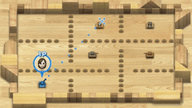

A Few month ago, while working on a remake of the Wii Tank Game ( especially the behavior of the ennemy's AI ), I stumbled upon vectorfield pathfinding, a new approach on pathfinding algorithms.
The goal of the algorithm is to compute the shortest path to a target for every points of a map, in one single calculation, aknowledging obstacles. Compared to A-Star or Djikstra's algorithm, this one allows greater performance when working with a medium / large amount of agents.
In today's post, we will first explain the idea of vectorfield pathfinding and how to construct it. Further, I will present a personnal study on how to optimize the different methods and parameters used in the algorithms ( in order to better suit criterias of smoothness or divergence for instance ).
Let set our world on a 2D map to which we overlay a square grid. The size of each square should be choosen according the shape and size of the obstacles. Indeed, smaller squares will better "discretize" our world's obtacles.
Pictures of bad and good choice of tile sizeThis condition on the tile's size is mandatory, but we will later see how their size also influence behaviors like the smoothness or the precision of the paths.
First, we need to generate the heatmap of our world, meaning the scalar-field that gives us the distance of each tile from the target. To do that, many algorithms exist like BFS or even A* but here we will use a modified Djikstra algorithm.
The principle of the Djikstra algorithm is a very straight foward:
% This quicksort algorithm is extracted from Chapter 7, Introduction to Algorithms (3rd edition)
\begin{algorithm}
\caption{Djisktra Algorithm}
\begin{algorithmic}
\PROCEDURE{Djikstra}{$\text{Map},\text{Target node}$}
\STATE $\text{Open List} = [\text{Target node}]$
\WHILE{$\text{len}(\text{Open List}) \neq 0$}
\STATE $\text{Current node} = \text{Open List}[0]$
\FOR{$\text{each Neighbor $i$ of Current node}$}
\IF{$\text{$i$ is a wall}$}
\STATE{$\text{break}$}
\ENDIF
\IF{$ i \text{ was never visited}$}
\STATE $i.distance$ = $\text{current_node}.distance + 1$
\STATE{$\text{Add $i$ to Open List}$}
\ENDIF
\IF{$ i \text{ was visited}$}
\IF{$ i.distance > \text{current_node}.distance + 1$}
\STATE{$i.distance = \text{current_node}.distance + 1$}
\ENDIF
\ENDIF
\ENDFOR
\STATE{$\text{Remove Current node from Open List}$}
\ENDWHILE
\ENDPROCEDURE
\end{algorithmic}
\end{algorithm}
Here, I implemented our Djikstra algorithm in Javasript using the p5.js library. Each tile of the grid is highlighted in a shade of red, depending of its distance to the target node.
Now that the heatmap is here, our goal is to generate the vectorfield from the later. To do that, we are going to base our approach on Kernel Convolution. Simply put, to determinate the direction a tile needs to point to, we look at its neighbors on a fixed radius $r$ in order to compute the tile's gradient. Indeed, in mathematics, the gradient refers to the rate of change of a function, but when this function is 2D like here, the gradient (now defined as a vector) orientation can be interpreted as the direction of the change.
Here, we will present 3 different methods to compute the direction of a tile and why they theoraticaly work.